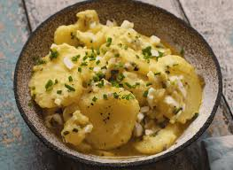
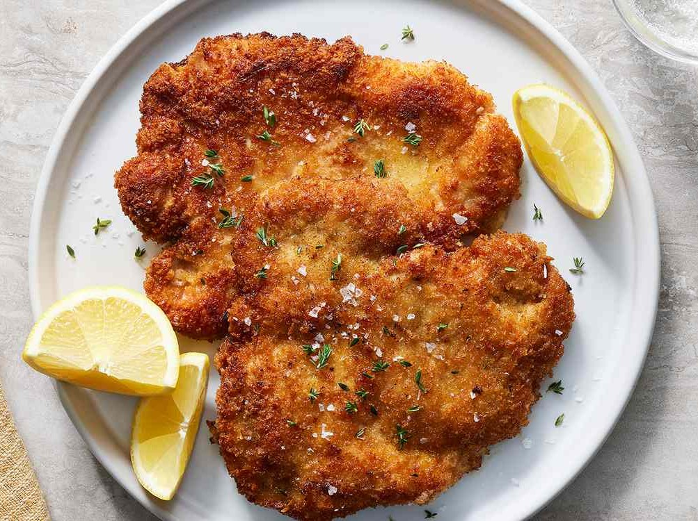
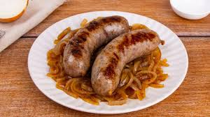
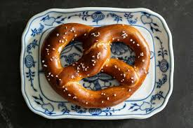
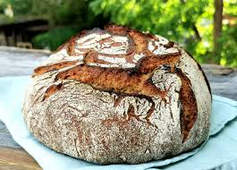
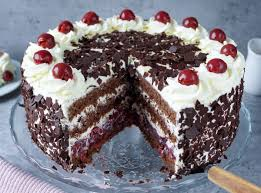
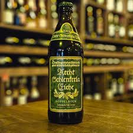
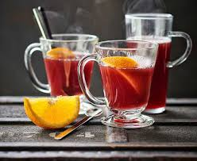

Sauerkraut
repolho fermentado (crucrute),bem tradicional
kartoffelsalat

salada de batata, pode ser feita com maionese ou vinagre
schnitzel

Carne empadanada e frita, geralmente de porco ou vitelas
bratwurst

Salsicha grelhada tradicional alemã
pretzel

pão em formato de nõ, com casca salgada e crocante.
bauernbrot

pão rustico alemão, feito com centeio e trigo.
apfelstrudel
massa fna recheada com maçã, canela e uvas-passas.
Shwarzwälder Kirschtorte

torta Floresta Negra com chocolate, chantily e cereja.
cerveja alemã

famosa muldialmente com vários estilos regionais.
Glühwein

vinho quente com especiarias,comum no inverno.
Foi costruido entre 1788 e 1791 no topa está a quadriga: escultura com quatro cavalos
Em 1806, Napoleão Bonaparte invadiu Berlim e levou a quadrigia para Paris. E 1814 foi devolvida sendo uma vítoria.